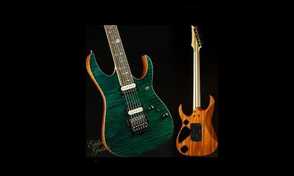
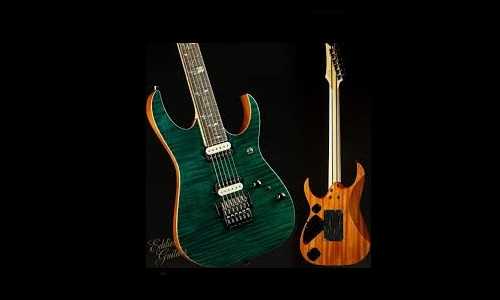

A Brief History of Ibanez guitars
- First instruments made in 1935 were Spanish-style acoustic guitars, at first using the "Ibanez Salvador" brand name in honor of Spanish luthier Salvador Ibáñez, and later simply "Ibanez"
- In the 1960s, Japanese guitar makers mainly copied American guitar designs. Ibanez-branded copies of Gibson, Fender, and Rickenbacker models appear. This resulted in the so-called lawsuit period.
- The late 1980s and early 1990s were an important period for the Ibanez brand. Hoshino Gakki's relationship with guitarist Steve Vai resulted in the introduction of the Ibanez JEM and the Ibanez Universe models; after the earlier successes of the Roadstar and Iceman models in the late 1970s – early 1980s, Hoshino Gakki entered the superstrat market with the RG series, a lower-priced version of their JEM series.
- As it happens, Vai would have a key, if inadvertent, part to play in Ibanez’s success and reinvention in the 1990s. Seven-string instruments had been around for decades, but in the early 90s when guitarists Munky and Head were looking for a way to make the riffs of their band’s riffs sound deeper, darker and more foreboding, Munky remembered his idol Steve Vai using a seven-string guitar in the 80s, and so the pair invested in seven-string Ibanez Universe instruments ahead of the recording of Korn’s seminal self-titled debut in 1994 – the sound of nu metal was born, and for the first time ever the seven-string guitar went mainstream.
- Since the 90s Ibanez has been a brand heavily associated with metal, and despite the brand’s attempts to branch out from that – the Talman and Roadcore instruments being notable instruments that have been mild hits in that vein – it’s a reputation that has stood the brand in good stead as the explosion of social media has seen an explosion of technical metal over the last decade, with everyone from Tosin Abasi and Yvette Young to Mårten Hagström and Tim Henson all creating signature models with the brand.
- More than a century after it first started making its own guitars, Ibanez has rightly earned a reputation creating innovative and boundary-pushing instruments for guitarists who are at the bleeding edge of what’s possible.
If you have time, you can read more about this incredible guitar brand on it's Wikipedia entry.


 
